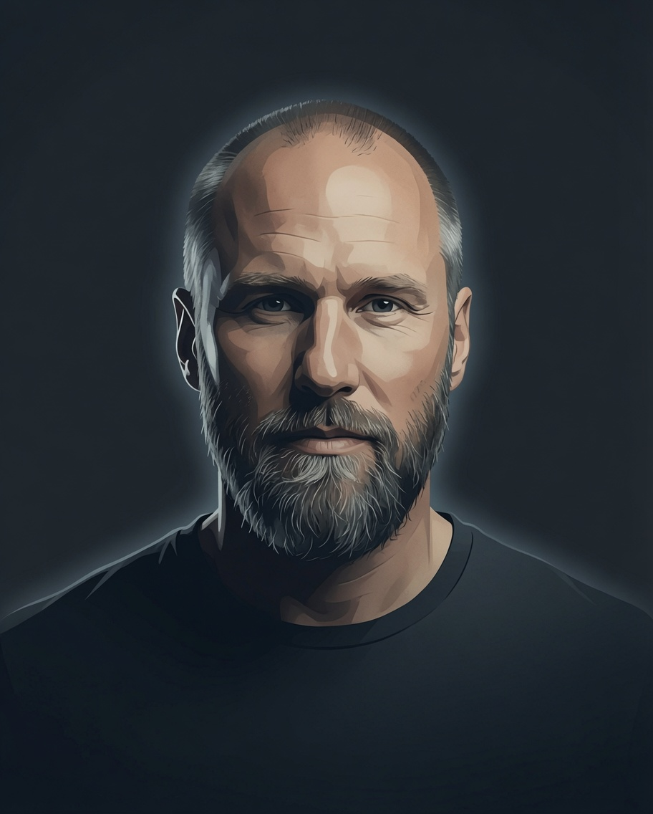

Jak být sám sobě osobním strážcem
Jan Řehák
Dvacet let v ochranné službě. Bývalý policista, osobní strážce tří amerických velvyslanců. Člověk, který se naučil, že nejlepší konflikt je ten, který nevznikne.
Jeho zásady nejsou pro lidi se sluchátkem v uchu. Jsou pro každého, kdo se chce vyhnout problémům dřív, než začnou. Jak číst situaci. Jak zůstat klidný, když všichni kolem zrychlují. Jak nastavit hranici jednou větou. Kdy odejít — a proč to není prohra.
Odnesete si konkrétní postup, ne motivační hesla.